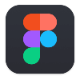
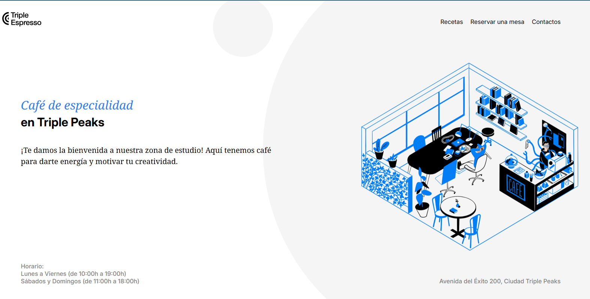
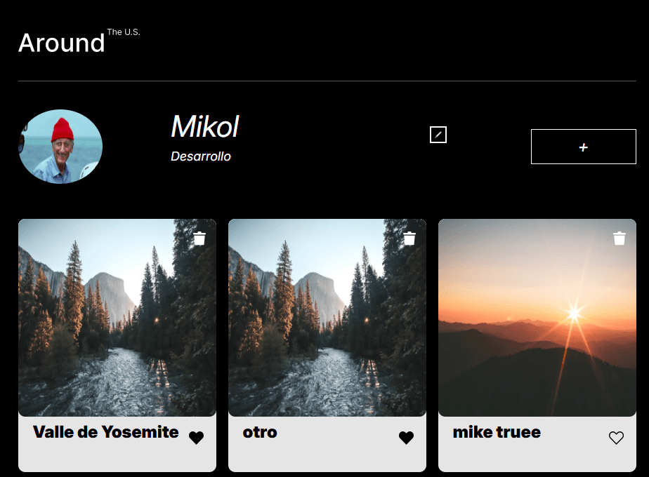
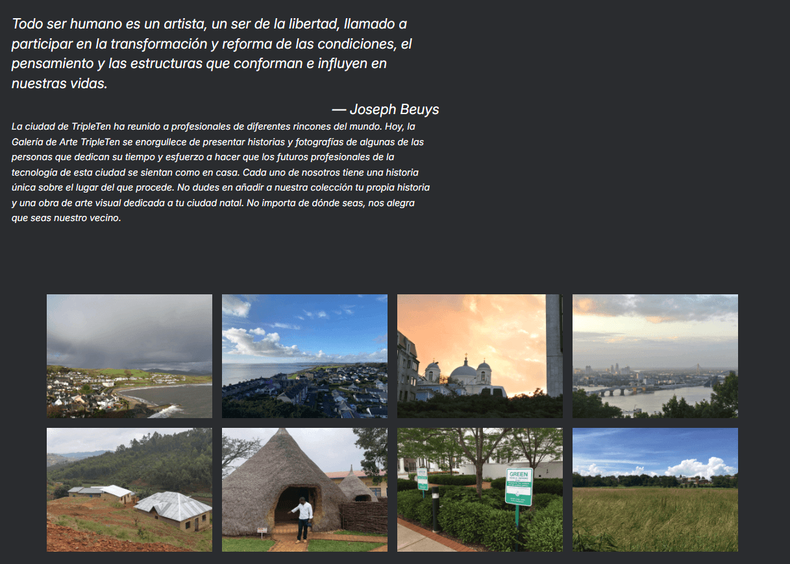

PROGRAMADOR WEB JUNIOR
especialista en interfaces interactivasSoy egresado de la carrera de Informática, con interés en el desarrollo web y la creación de soluciones digitales funcionales e intuitivas. Me motiva analizar y resolver desafíos mediante la programación, desarrollando soluciones eficientes que aporten valor tanto a los usuarios como a los proyectos en los que participo.
Actualmente complemento mi formación profesional a través del bootcamp de TripleTen, donde fortalezo mis habilidades en desarrollo web, especialmente en JavaScript, HTML y CSS. Mi objetivo es seguir creciendo como desarrollador frontend, creando interfaces interactivas, dinámicas y enfocadas en la experiencia del usuario.
Lenguajes

FigmaPROYECTOS

Café de especialidad

Alrededor de los EE.UU.
